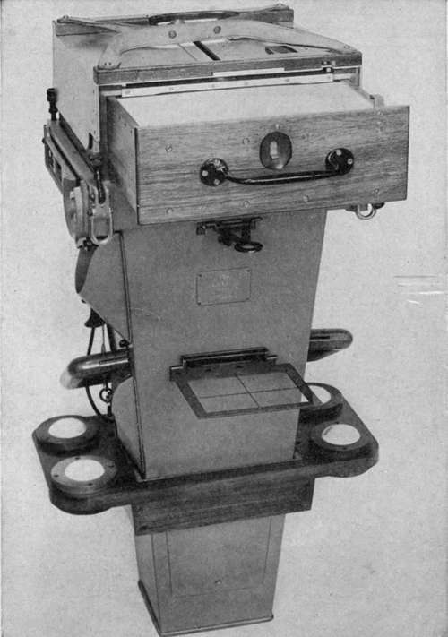
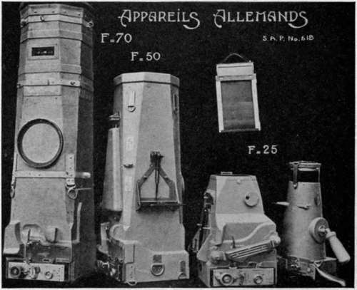
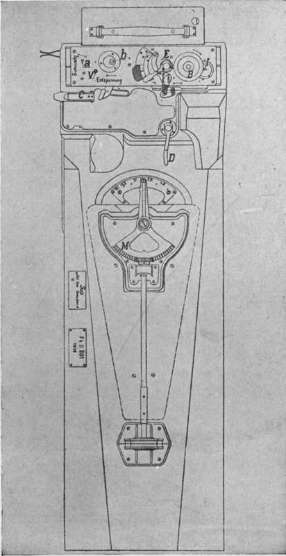
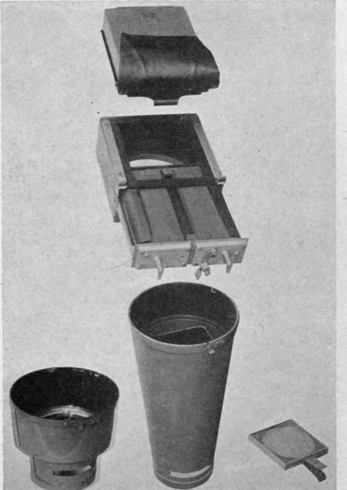
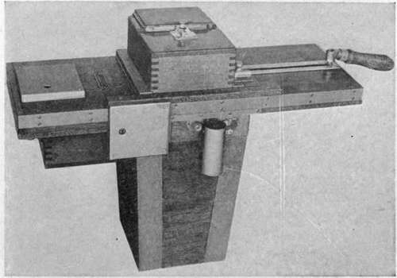
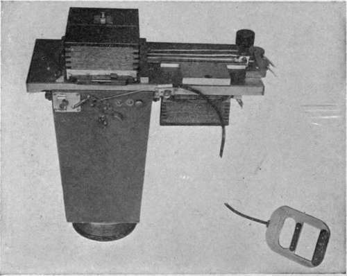
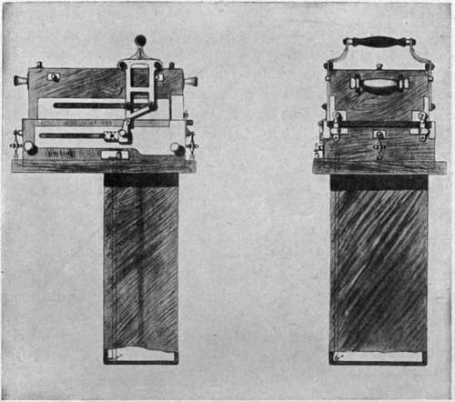
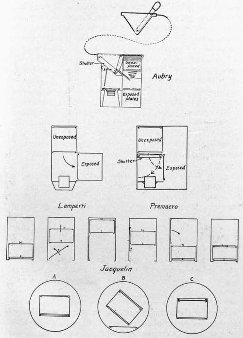
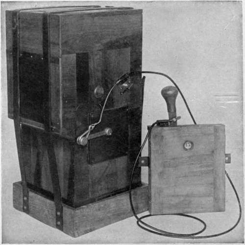

General Characteristics Of Hand Operated Cameras
Description
This section is from the book "Airplane Photography", by Herbert E. Ives. Also available from Amazon: Airplane photography.
General Characteristics Of Hand Operated Cameras
As distinguished from the hand-held cameras the larger hand-operated cameras are characterized by the greater focal length of their lenses, the size of plate employed, and the manner of holding—by some form of anti-vibration mounting attached directly to the fuselage. 102
Except for the early English C and E type cameras which called for 10 inch lenses and 4X5 inch plates, the general practice at the close of the war by agreement between the French, English and American Air Services, was for the use of 18X24 centimeter plates and for lenses with focal lengths of approximately 25, 50 and 120 centimeters. The English also made use of a 14 inch (35 centimeter) lens, and never made a regular practice of anything larger than 50 centimeters. The Germans and Italians restricted themselves to the 13X18 centimeter size of plate, while a lens of 70 centimeters focal length was standardized with the Germans, in addition to the 25, 50, and 120 centimeter.
The particular focal length was determined by the nature of the photographic mission. Where large areas were to be covered at low altitudes or without the demand for exquisite detail, the shorter focus lenses suffice. The most commonly used lens in the French Service was the 50 centimeter, while the 120 was employed when high flying was necessary or when minute detail was required. As already mentioned, the common practice was to keep cameras of all focal lengths available, but the ideal at the close of the war was to have the camera nose and lens a detachable unit, so that any focal length desired could be secured with the same camera body.
The Standard French Camera
The hand-held form of French camera has already been described. The cameras for larger plate sizes and longer focus lenses differ only in the addition of a Bowden-wire distance release for the shutter and in the use of the Gaumont magazine which operates without the necessity of pointing the exposed side of the magazine upward. Fig. 40 illustrates the 50 centimeter camera, and Fig. 41 the 120.
The German Lea Cameras
These are larger editions of the light wood hand camera already described, but with the addition of a Bowden-wire shutter release. The body of the larger cameras carries a distinctive feature in the distance control of the lens diafram, worked by means of a lever which actuates racks, pinions and connecting rods leading to the lens. On the side of the camera body a shallow box is provided for carrying the color filter in its bayonet joint mount to fit on the lens (Figs. 42 and 43).
Fig. 40. - 50 centimeter deMaria hand operated camera on tennis ball mounting.

Fig. 41. - 120 centimeter deMaria camera.
Fig. 42. - German aerial cameras.
The hand-operated bag-magazine camera of the United States Air Service (Type M) is similar to the small handheld camera, but differs in three respects: a removable shutter (of the variable-tension fixed-aperture type) embodying an auxiliary curtain for capping during the setting operation; a Bowden-wire shutter release; and the employment of a set of standard interchangeable cones to hold lenses of several focal lengths. The 20 inch and 10 inch cones are shown in Fig. 44. The operation of this camera is similar to the French standard cameras, but not so simple because of the number of motions required in manipulating the bag the first used in the English service, fixed to the fuselage, and were later used in training work in England and in the United States. They were never built for plates larger than 4X5 inch nor for lenses of more than 12 inch focus, a limitation set by the lenses available at the time of their design.
Fig. 43. - Diagram of German 50 centimeter camera.
Fig. 44. - U. S. hand-operated aerial camera (type M) with 10 and -20 inch cones.
Fig. 45. - English C type aerial camera.
In several respects the mode of operation of the two types is the same. The unexposed plates are held in a magazine lying above the camera, in the axis of the lens (Fig. 32).
Its chief objection for war work lies in fact in the magazine, which should be superseded by a two-compartment or other satisfactory type of plate changing chamber. The camera alone, with 20 inch cone, weighs approximately 40 pounds; the loaded magazine, with its plates in metal sheaths, 15 pounds.
The English C And E Type Cameras
The C and E type cameras have now chiefly an historic interest. They were:
After exposure the bottom plate is carried to one side and allowed to fall by the action of gravity into the receiving magazine. In the C type (Fig. 45) an opaque slide is drawn between the lens and the (variable-opening) shutter during the setting operation. During the exposure period this slide projects into a compartment on the opposite side of the camera from the camera mechanism 46), a flap over the the sliding screen, width of two plates by a handle on top is made for distance receiving magazine, thus making the three plates wide. In the E type (Fig. lens makes it possible to dispense with and reduces the camera to about the In the C type the plates are changed of the camera; in the E type provision control by cords, and for shutter release.
Fig. 46. - English type "E" hand-operated plate camera.
Fig. 47. - Italian (Piserini and Mondini) two compartment magazine hand-operated camera.
Italian Two-Compartment Magazine Camera
A camera designed by Piserini and Mondini was used to some extent by the Italian service toward the close of the war (Fig. 47). This has the desirable feature just noted in the C and E cameras: the operations of plate changing and shutter setting are performed in a single motion. Unlike those cameras, however, the plates are changed from one compart by a Bowden wire. In both cameras the operation of plate changing also sets the shutter, a definite advance over the two preparatory motions in the French apparatus. The C type was constructed of wood, the E of metal.
Merit to another of the magazine already described, without dependence on gravity, by an entirely positive shifting action. The setting of the self-capping focal-plane shutter is accomplished by a projecting finger engaging the shutter mechanism. Cameras of this general type, built for 18 by 24 centimeter plates, with interchangeable lens cones, removable shutters, and preferably magazines in which the center of gravity does not shift as the plates are changed, represent the next step in advance of the French practice, and may indeed prove all that is necessary or desirable in camera complexity for peace-time photography from the air.
The Standard Italian Camera And Similar Types
The camera (Lamperti) which the Italian Air Service used almost exclusively during the war exemplifies a type quite different from anything as yet described (Figs. 48 and 49). Plates to the number of twenty-four (13 X18 cm.) are loaded into a chamber at the top of the camera. Each plate is held in a septum furnished with projecting lugs at one end. A lever acting through a Bowden wire, exposes the bottom plate, which then swings downward about these lugs as pivots, and is forced by a pair of fingers into a compartment at the side. The between-the-lens shutter has a single speed of 1/150 second, and variation of exposure is achieved by altering the lens aperture.
The great advantage of this camera is its simplicity, a single motion performing all the operations. Its disadvantages are its dependence on gravity for operation, its between-the-lens shutter, the limitation set to the number of exposures, and the necessity for removing the whole camera to take out the plates for developing. In actual practice the camera has worked out well. The better light found in the Italian as contrasted with the northern theatre of war makes the between-the-lens shutter at high speed adequate, while the limitation to the number of exposures has been met by carrying several complete cameras in each plane. Because of the Bowden-wire operation these cameras need not be accessible to the observer or pilot, so that the practice of carrying them in single-seaters was common. Attempts at standardization of Allied practice through the adoption of standard lens cones were, of course, out of the question with this camera. With its limitations of shutter efficiency and plate size it is doubtful whether it would have been satisfactory outside the service for which it was developed.
Fig. 48. - Various plate changing devices.
Fig. 49. - Italian (Lamperti) single-motion plate camera, on and-vibration tray.
The limitations set by the between-the-lens shutter in this type have been overcome in an experimental camera along similar lines made by the Premo Works of the Eastman Kodak Company, and in the French Aubry model (Fig. 48). These employ focal-plane shutters which swing out of the way and are set as the exposed plate swings or drops to the receiving chamber. The dependence on gravity in this type could doubtless be avoided by positive finger mechanisms. If so, the resultant cameras, set and exposed by a single motion, would acquire a highly desirable simplicity of operation. They would have peculiar merit because of the very short interval required between exposures—a characteristic needed for making low stereo-oblique views. The cameras just mentioned have, however, departed far in form from the lines of standardized practice and have not been followed up.
Continue to:
- prev: Chapter VIII. Non-Automatic Aerial Plate Cameras
- Table of Contents
- next: Chapter IX. Semi-Automatic Aerial Plate Cameras
Tags
camera, lens, airplane, aerial, film, exposure, photography, maps, birdseye